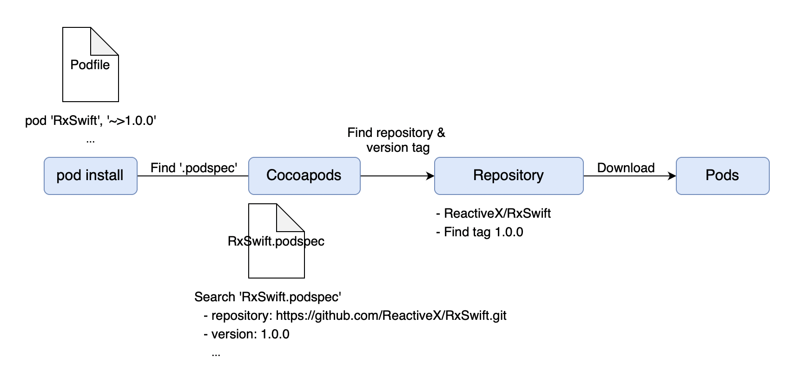
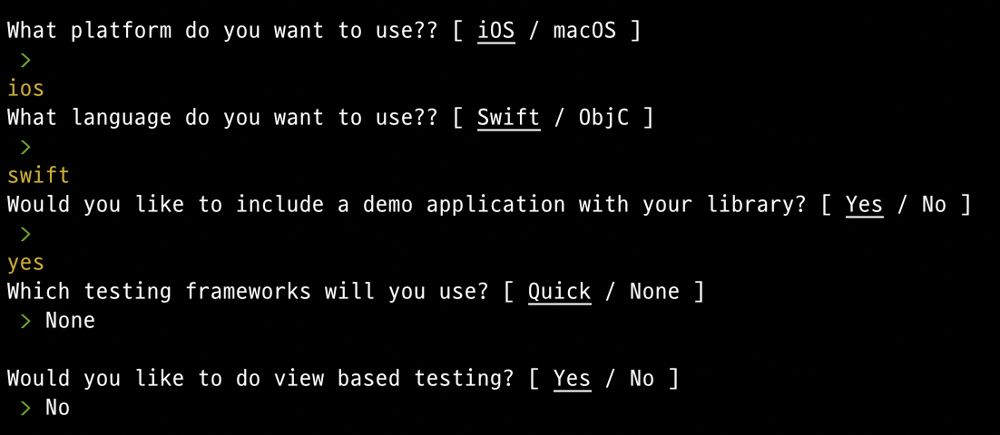
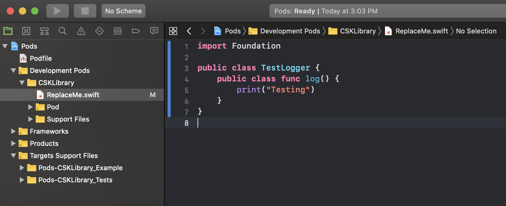
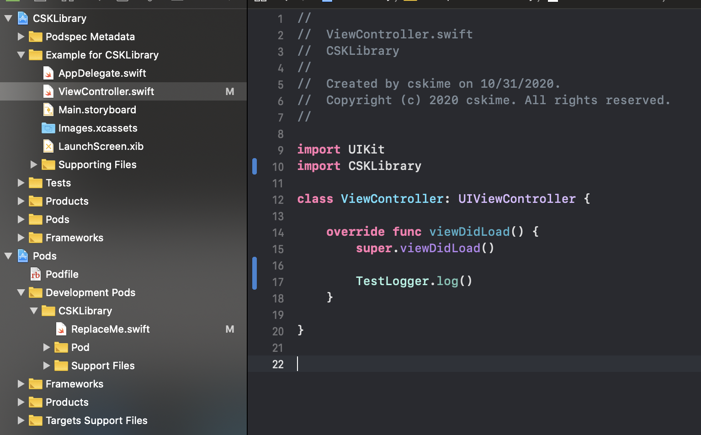
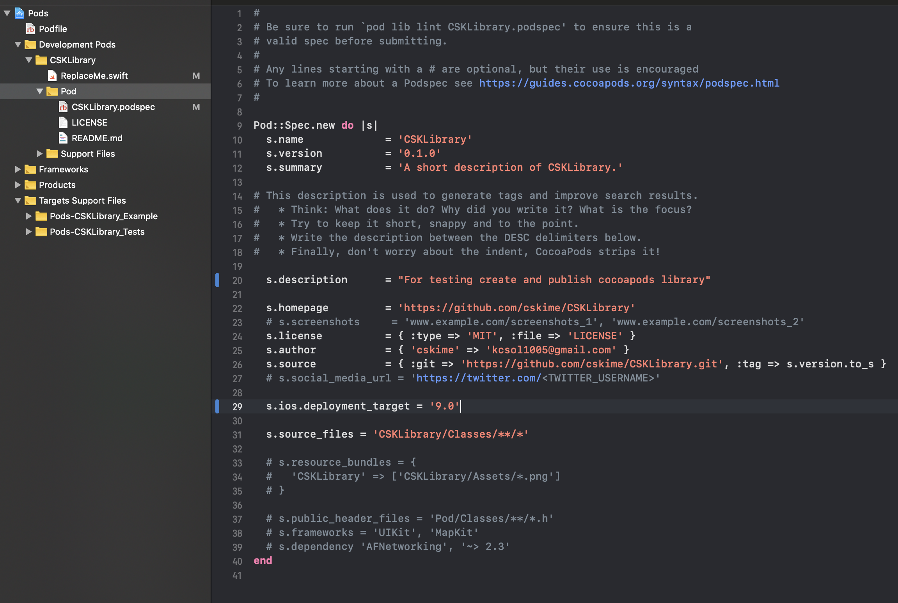

Cocoapods으로 라이브러리 배포하기
Swift, Objective-C 라이브러리의 배포, 설치, 업데이트 등을 관리하는 도구이다. Cocoapods을 사용해서 오픈소스 라이브러리처럼 불특정 다수의 사용자에게 내가 만든 라이브러리를 배포하는 방법을 정리한다.
Table of Contents
Cocoapods 동작 방식
먼저 cocoapods이 라이브러리의 소스코드를 다운받아 사용하는 방법을 생각해보자. 오픈소스 라이브러리를 사용할 때를 생각해 보면, cocoapods에 등록된 라이브러리들은 모두 remote repository가 함께 등록되어 있다. 대부분 github repository인데, pod install 명령어를 실행하면 해당 라이브러리의 repository로부터 source를 다운받는다.
이게 가능하려면 cocoapods이 어떤 라이브러리의 source repository 경로를 알고 있어야 할 것이다. Podfile에 버전을 명시하여 특정 버전의 source 파일을 다운받을 수도 있는걸 보면, repository 경로 외에도 버전 등 다양한 정보가 cocoapods에 저장되어 있을 것이다. Cocoapods이 라이브러리 source를 찾을 수 있는 정보를 제공하는 것이 .podspec 파일이다.
.podspec 파일에 라이브러리의 repository 경로, 버전, author 등의 정보를 담아서 cocoapods 서버에 upload 한다. pod install 명령을 실행하면 Podfile에서 정의한 라이브러리의 이름으로 .podspec을 찾고, 그 안에 정보를 바탕으로 라이브러리의 repository를 찾아 source file을 다운로드한다.

Cocoapods으로 라이브러리를 사용하는 과정이 과정을 역으로 생각하면, 우리가 만든 라이브러리를 배포할 때는 다음 작업들이 필요할 것이다.
- 라이브러리 만들기
.podspec에 라이브러리 정보 입력- Cocoapods 서버(trunk)에
.podspecupload하기 .podspec에 정의한 repository 경로에 소스 파일 upload
라이브러리 만들기
여기서는 cocoapods에서 제공하는 템플릿을 사용해 보기로 한다. 아래 명령어를 실행해서 템플릿 프로젝트를 생성한다.
1 | pod lib create {pod_name} |
명령어를 실행하면 다음과 같이 몇 가지 설정을 진행한다. 해당하는 항목을 입력하고 enter를 입력한다. (아무것도 입력하지 않으면 밑줄 친 항이 선택된다.)

설정을 마치면 _Pods 프로젝트가 생성된다. 세 번째 항목에서 Yes를 선택했다면 라이브러리를 테스트하거나 사용법을 안내할 수 있는 Example 프로젝트가 함께 생성된다. _Pods 프로젝트를 열어서 Development Pods 폴더 하위에 파일을 추가하여 개발을 진행하면 된다.

평소 개발할 때는 접근제한(access control)을 private이나 fileprivate까지만 사용해 왔다. 라이브러리를 만들 때는 다른 모듈에서 사용할 수 있어야 하므로 public 접근 제한자가 사용된다. 라이브러리에서 만든 클래스를 상속하거나, override하려고 한다면 해당 클래스 및 멤버의 접근 제한자를 open으로 지정한다.
Example 프로젝트를 열어서 라이브러리가 잘 사용되는지 확인해보자.

.podspec 정의하기
.podspec 파일에는 라이브러리의 이름, 버전, subspec 등의 정보를 정의한다. Cocoapods은 .podspec 파일에 정의된 내용을 바탕으로 source를 찾아서 다운로드할 것이다. 사용 가능한 옵션들은 여기서 확인할 수 있다.
라이브러리를 pod 템플릿으로 생성했다면 Development Pods/Pod 경로에 .podspec 파일이 자동으로 생성되었을 것이다. 필요한 내용을 적절하게 수정해 준다.

배포하기
.podspec을 만들었다면 cocoapods이 내 라이브러리를 찾을 수 있도록 .podspec과 source file을 repository에 upload 해야 한다. 배포를 위해 두 개의 저장소가 필요하다.
- Library repository : 라이브러리의 source file들을 upload한다.
- Spec repository :
.podspec을 upload한다.
Public 배포
Public 배포는 모든 사람들이 cocoapods을 사용해서